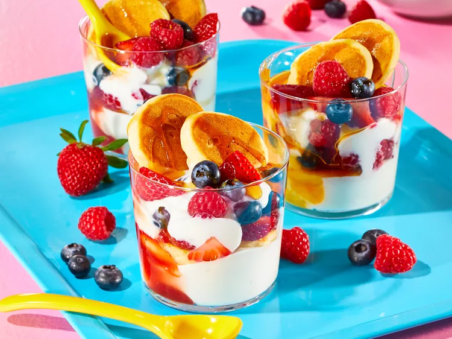

Mini Pancake Parfait

Description
Teeny pancakes get the parfait treatment when they’re layered with yogurt, mixed fruit,
and pancakes’ bestie: maple syrup.
Ingredients
- 2/3 cup vanilla yogurt
- 1 tablespoon jam or fruit preserves
- 5 (mini) Good Old-Fashioned Pancakes
- 1 cup mixed berries
- 1 teaspoon pure maple syrup, or to taste
Directions
- For each parfait, layer 1/3 cup vanilla yogurt, 1 tablespoon jam or fruit preserves,
3 mini pancakes, and 1/2 cup mixed berries in a wide-mouthed glass or jar.
- Repeat yogurt and berry layers.
- Add 2 additional pancakes and drizzle with maple syrup.